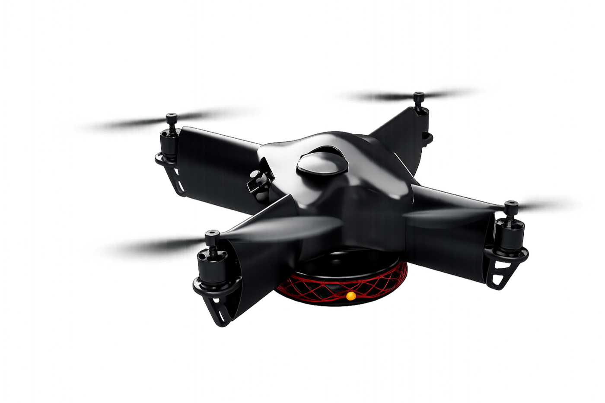
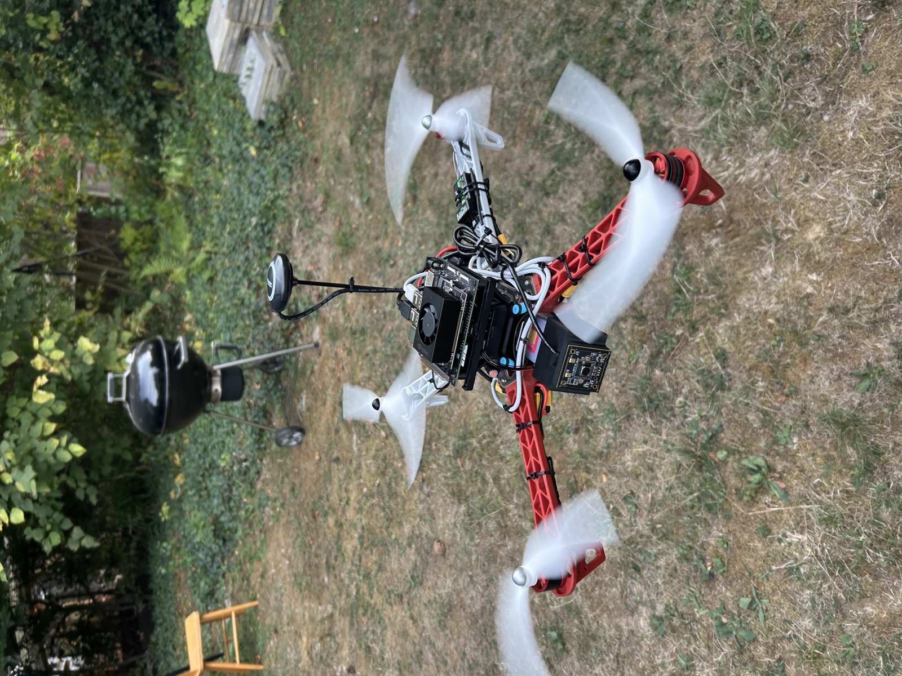
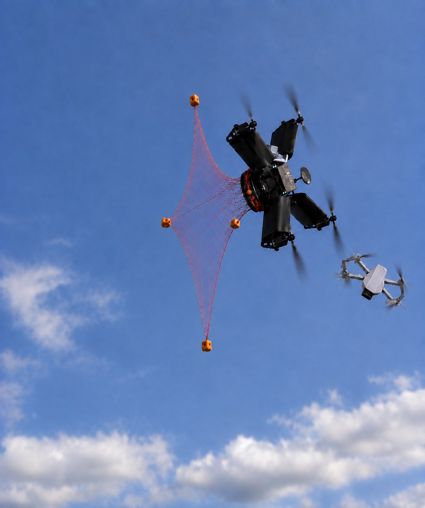
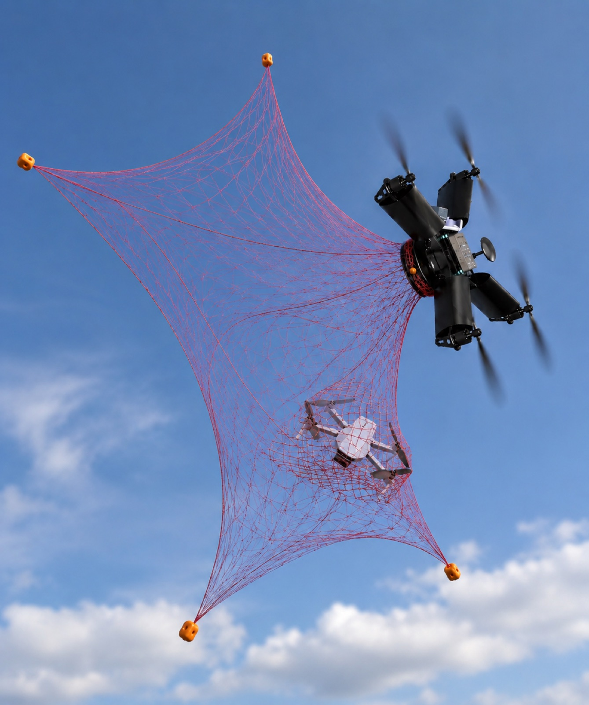
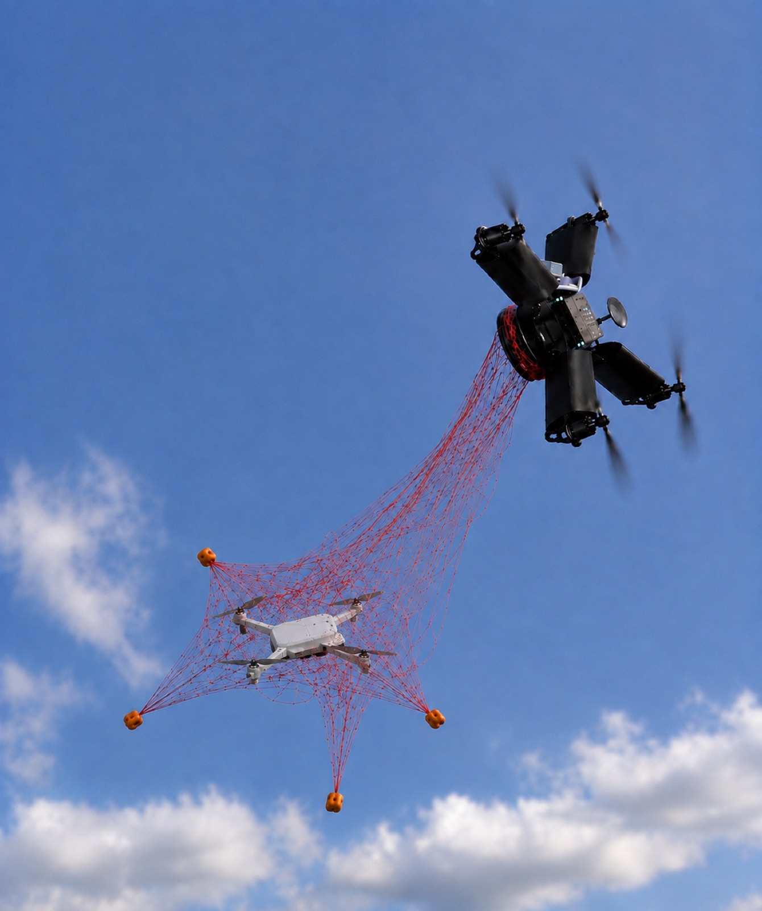

VETRA: autonomous drone interception
Small, fast quadcopters are a growing risk for infrastructure and public events. Most existing counter-drone systems are expensive, need a lot of staff and are installed in one place. With VETRA we are working on a mobile interceptor that flies to a target drone on its own, catches it with a net and carries it out of the danger zone. I started VETRA together with a friend.
Technical implementation
- Integrated perception and flight control on real hardware: Jetson Orin Nano, Pixhawk flight controller and an RGB camera.
- Implemented autonomous flight, object tracking and a closed-loop approach towards a tracked target.
- Currently: RL-based path planning, the net mechanism and the first functional prototype.
Progress
- Autonomous flight
- Object tracking
- Autonomous flight towards the tracked object
- Intercept flight
- Net launch with 360° shot
- Carry the target out of the danger zone
Achieved Next steps




